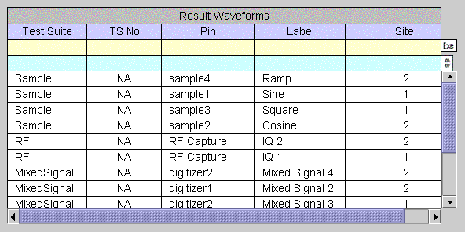

Passing Waveform into Signal Analyzer
In order to debug a waveform captured from the hardware, retrieve the waveform from the hardware and pass it into the Signal Analyzer by using an API such as PUT_DEBUG API or the Data Display API.
The following is an example of how to pass a waveform into the Signal Analyzer:
ARRAY_D waveform1, waveform2;
waveform1 = Analog.DGT("dgt1").getWaveform();
waveform2 = Analog.DGT("dgt2").getWaveform();
PUT_DEBUG("dgt1", "first", waveform1);
PUT_DEBUG("dgt2", "second", waveform2);
The Waveform Navigator Tool (WNT) will list each waveform as shown in the following screen.

In this state, clicking the right mouse button on a row and selecting the "Upload (New Window)" menu item causes the waveform to be displayed in a new waveform display area of the WGT, and causes the waveform to be listed in a new category of the WNT.